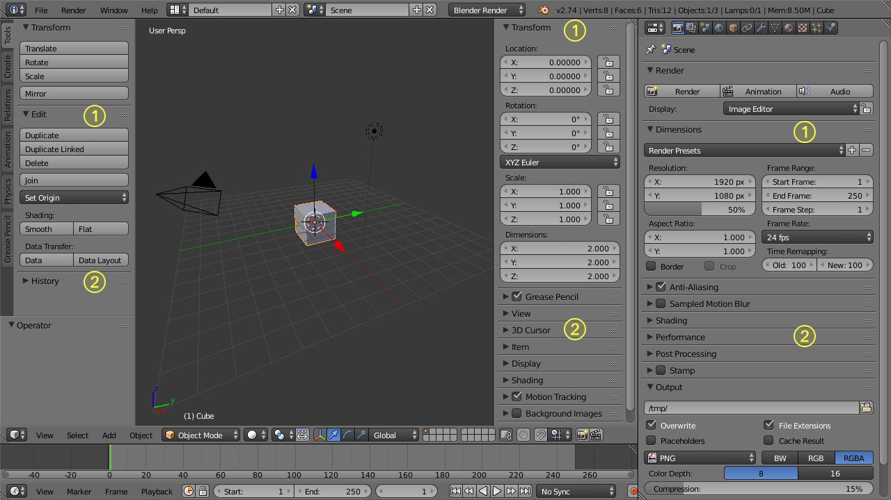

Panels¶
Panels are collapsible sections within regions to help organize the interface. They are heavily used in the Properties Editor but also appear elsewhere (For example: in the Tool Shelf or the Properties Shelf, available in some editors).
The image below shows panels in different regions in their expanded and collapsed state.

{kind=link}
Expanded (1) and collapsed (2) Panels in the Properties Editor (right area) and in the additional Regions of the 3D视图 Editor (left area)
- A click with the
LMBon the title area of a panel expands or collapses it. - A
LMBdrag motion over the title area will expand or collapse many at once. - A
Ctrl-LMBclick on the title area of a specific panel will collapse all other panels and make this the only expanded one.
Some panels only show in certain contexts. So for instance the Tool Shelf will show different panels depending on the objects mode.
There are some options available to customize panels to your preference:
- You can change the position of a panel within its region by clicking and
dragging it with the
LMBon the little widget in the upper right corner. - The zoom factor of a whole region with panels can be changed by
Ctrl-MMBclicking and moving the mouse anywhere within that region or use theNumpadPlusandNumpadMinusto zoom in and out the contents. PressingHome(Show All) will reset the zooming at the screen/panel focused by the mouse pointer. - The alignment of the panels in the Properties Editor can be changed
between vertical and horizontal. To do this click with
RMBsomewhere within the main region of the Properties Editor and choose either Horizontal or Vertical from the appearing menu. Keep in mind though that the panels are optimized for vertical alignment.